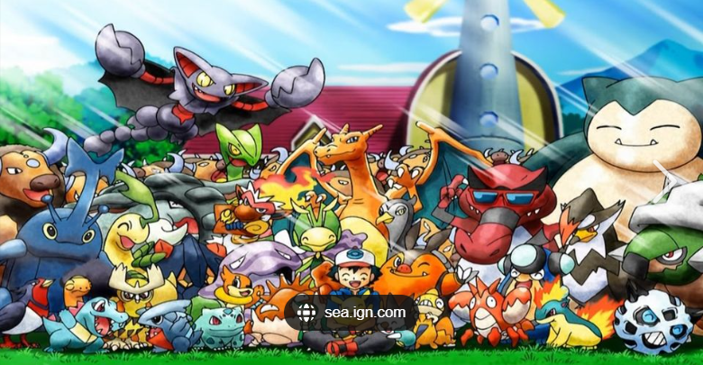

Pokemon History
 , short for Pocket Monsters, is a global phenomenon that began in 1996 with the release of the video games Pokémon Red and Green in Japan. These games introduced a world filled with creatures called Pokémon that could be captured, trained, and battled against other Pokémon. The series quickly expanded to include animated television shows, trading card games, and merchandise, captivating audiences of all ages worldwide. The Pokémon franchise has become one of the most successful media franchises in history, with billions of dollars in revenue and a dedicated fan base.
, short for Pocket Monsters, is a global phenomenon that began in 1996 with the release of the video games Pokémon Red and Green in Japan. These games introduced a world filled with creatures called Pokémon that could be captured, trained, and battled against other Pokémon. The series quickly expanded to include animated television shows, trading card games, and merchandise, captivating audiences of all ages worldwide. The Pokémon franchise has become one of the most successful media franchises in history, with billions of dollars in revenue and a dedicated fan base.
The creators of Pokémon are Satoshi Tajiri and Shigeki Morimoto. They were inspired by their childhood hobby of collecting insects and combined it with their love of video games to create the concept of Pokémon.
Tajiri is credited with coming up with the original idea for Pokémon, while Morimoto was instrumental in developing the gameplay and mechanics. Together, they worked with Game Freak to bring Pokémon to life.
-

Key milestones in Pokémon's history include:
1996: The release of Pokémon Red and Green in Japan.
1998: The launch of the Pokémon anime series.
1999: The introduction of the Pokémon Trading Card Game.
2000: The release of Pokémon Gold and Silver, introducing new Pokémon and gameplay features.
2016: The global success of the mobile game Pokémon Go.
2019: The release of the highly anticipated Pokémon Sword and Shield.
Pokémon's popularity is largely due to its engaging storytelling, lovable characters, and strategic gameplay. The series has evolved over the years, introducing new regions, Pokémon, and storylines while maintaining its core appeal.